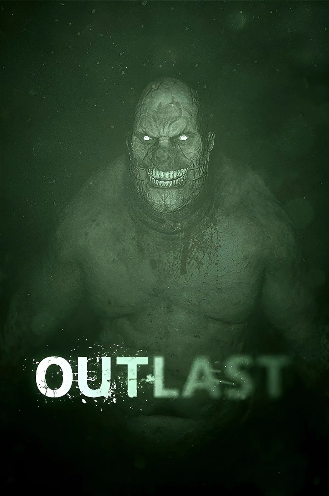
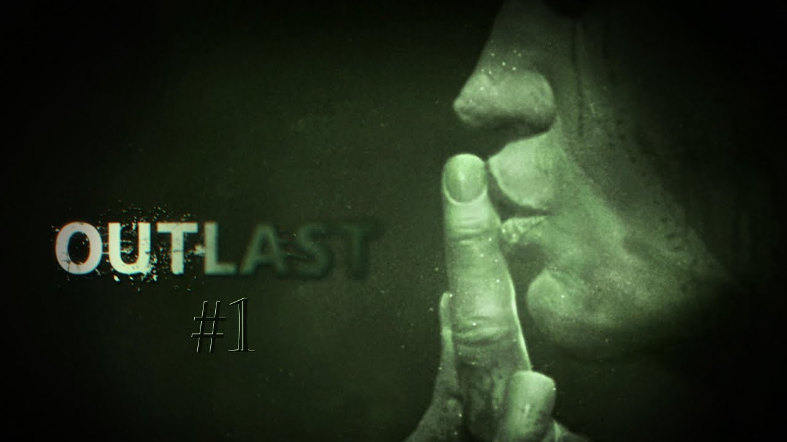

About Me
Hi, I’m Joey. I’m a Game Design major who loves horror games and wants to create my own someday. Horror has always been the genre that pulls me in the most the atmosphere, the tension, the storytelling, all of it inspires me creatively.
My Favorite Horror Game
My favorite horror game is Outlast. It’s the game that made me fall in love with horror as a player and as a future developer. The way it uses sound, lighting, and helplessness creates a level of fear that sticks with you long after you stop playing.


Why I Want to Make Horror Games
I want to create horror games because I love the challenge of building fear through design. Horror isn’t just jumpscares it’s pacing, storytelling, environment, and psychology. I want to learn how to make players feel something intense and unforgettable.
My Design Process Screenshots
Here are the screenshots showing my rough, draft, and final webpage designs for Assignment 1.